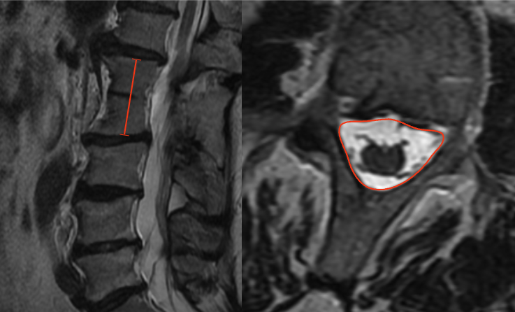

1) Description of Measurement
Block vertebrae are congenital anomalies resulting from failure of normal segmentation, producing fusion of two or more adjacent vertebral bodies. Assessment focuses on quantifying the length of vertebral fusion and evaluating spinal canal dimensions at and adjacent to the fused segment.
These measurements help determine the risk of adjacent segment degeneration, canal stenosis, and neurologic compromise, and are critical for preoperative planning in patients with congenital deformities or superimposed degenerative disease.
2) Instructions to Measure
A. Fusion Length (Sagittal MRI)
B. Canal Dimension Assessment (Axial MRI)
3) Normal vs. Pathologic Ranges
Key points:
4) Important References
Ramírez N, Cornier AS, Campbell RM Jr, Carlo S, Arroyo S, Romeu J. Natural history of thoracic insufficiency syndrome: a spondylothoracic dysplasia perspective. J Bone Joint Surg Am. 2007 Dec;89(12):2663-75. doi: 10.2106/JBJS.F.01085.
Basu PS, Elsebaie H, Noordeen MH. Congenital spinal deformity: a comprehensive assessment at presentation. Spine (Phila Pa 1976). 2002 Oct 15;27(20):2255-9. doi: 10.1097/00007632-200210150-00014.
Ma X, Du Y, Wang S, Ma J, Wang T, Kuang M, Ma B. Adjacent segment degeneration after intervertebral fusion surgery by means of cervical block vertebrae. Eur Spine J. 2018 Jun;27(6):1401-1407. doi: 10.1007/s00586-017-5371-5.
5) Other info....
Block vertebrae are commonly associated with:
MRI is preferred for:
Should be interpreted alongside:
Documentation should include: